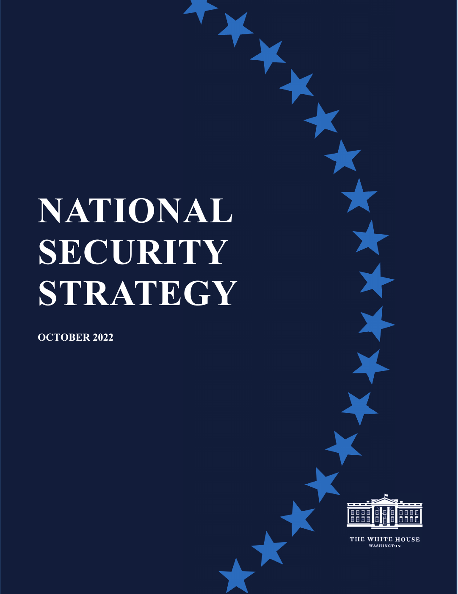

U.S. FOREIGN POLICY / WEEK 15
Understanding today’s foreign-policy debates
- 2017–2026 teaching horizon
- Dr. Murat Toman
U.S. FOREIGN POLICY / WEEK 15
The main idea
- Recent U.S. strategies offer competing views of national interests, alliances, and the economy. Because this period is still developing, conclusions must stay tied to dated evidence.
- Choose a recent claim and record the event date, publication date, and evidence used. Separate verified events, official statements, and your own interpretation. Compare the case with history without assuming the situations are identical. Explain what new evidence would make you revise your conclusion.
U.S. FOREIGN POLICY / WEEK 15
Where this week fits in history
| When | Selected event |
|---|---|
| 2001 | September 11 attacks and authorization for force |
| 2015 | Iran nuclear agreement announcement |
| 2025 | November National Security Strategy: contemporary primary-source comparison |
U.S. FOREIGN POLICY / WEEK 15
History through a source

- This document is evidence of an official statement or decision. Its wording and appearance help us identify the source, but its promises still need to be checked against evidence of actions and results.
- Use the linked transcription or PDF to read the text. Ask who issued it, what it claims, and whose viewpoint is missing.
U.S. FOREIGN POLICY / WEEK 15
Key words explained
- Interdependence: A relationship in which actors depend on one another, creating both benefits and vulnerabilities.
- Supply chain: The connected steps and organizations involved in producing and delivering goods.
U.S. FOREIGN POLICY / WEEK 15
Key words explained
- National Security Strategy: An official statement of a government’s security priorities and proposed approach.
- Implementation: The actions and resources used to put a policy into practice.
U.S. FOREIGN POLICY / WEEK 15
Recent history needs clear limits
- This week covers a 2017–2026 teaching horizon, not a finished account of the period. Selected strategy documents and media are snapshots.
- A policy announcement shows a position at a particular time. New evidence may change what can reasonably be concluded about its effects.
U.S. FOREIGN POLICY / WEEK 15
Strategy documents set out priorities
- The 2022 and November 2025 strategies describe national interests and proposed approaches. Comparing their language can show continuity and change.
- That comparison does not by itself establish what the government did or achieved. Implementation also depends on institutions, budgets, political support, and other actors.
U.S. FOREIGN POLICY / WEEK 15
The economy is part of foreign policy
- Supply chains, industry, jobs, and trade link domestic choices to international relationships. Cross-border dependence can create benefits and vulnerabilities at the same time.
- A policy intended to improve security may distribute costs unevenly at home. These effects help explain political disagreement.
U.S. FOREIGN POLICY / WEEK 15
Different forms of influence still need different explanations
- Military threats, sanctions, and technology restrictions apply pressure through different means. Alliances, education, and public diplomacy may help build trust or attraction.
- Labels such as ‘hard’ and ‘soft’ are useful only when we explain how the policy changes another actor’s choices. Nonmilitary action can still be coercive.
U.S. FOREIGN POLICY / WEEK 15
A current-affairs argument must be revisable
- Choose a recent claim and record the event date, publication date, and evidence used. Separate verified events, official statements, and your own interpretation.
- Compare the case with history without assuming the situations are identical. Explain what new evidence would make you revise your conclusion.
U.S. FOREIGN POLICY / WEEK 15
Politics at home and abroad
- At home: Elections, trust, industry, jobs, and institutions affect commitments abroad.
- Abroad: Governments debate how to manage competition, partnerships, and international cooperation.
- The connection: domestic support and resources affect what leaders can promise abroad. International events can change domestic priorities.
U.S. FOREIGN POLICY / WEEK 15
How power worked
| Form of influence | How it operated in this week |
|---|---|
| Hard power | Military deterrence, sanctions, and technology restrictions can impose costs or limit choices. |
| Soft power | Reliable partnerships and credible institutions may attract cooperation, but outcomes need current evidence. |
- Current outcomes require current evidence; a strategy is an administration’s claim, not a verified achievement report.
U.S. FOREIGN POLICY / WEEK 15
A worked explanation
- Can a strategy document prove that a government achieved its objectives?
- No. It establishes declared priorities. Evidence about actions, resources, and results is needed to assess achievement.
- Why this matters: Choose a recent claim and record the event date, publication date, and evidence used. Separate verified events, official statements, and your own interpretation. Compare the case with history without assuming the situations are identical. Explain what new evidence would make you revise your conclusion.
U.S. FOREIGN POLICY / WEEK 15
Practice with the documents
- Choose the same topic in the 2022 and November 2025 strategies, such as alliances or industry.
- Write one similarity and one difference, with a reference to each document.
- Identify a dated budget, decision, or independent report needed to test whether those plans became action.
U.S. FOREIGN POLICY / WEEK 15
How to support an answer
- A claim is what you argue. Evidence is a specific passage, event, or finding that supports it. Explain the connection between them.
- Example structure: “The document claims ____. This suggests ____. It cannot by itself show ____.”
- A speech can establish what a speaker said. Evidence of actions and consequences is needed to judge whether the policy worked.
U.S. FOREIGN POLICY / WEEK 15
What to remember
- Strategy documents establish declared priorities, not verified achievements.
- Domestic distribution and institutional durability affect external capacity.
- Nonmilitary instruments may operate through coercion rather than attraction.
- Contemporary conclusions should be dated, corroborated, and explicitly revisable.
U.S. FOREIGN POLICY / WEEK 15
Reading guide
- National Security Strategy (October 2022) A document from the period. Use it to identify what officials claimed or authorized, then check other evidence for the consequences. External source page; access may vary.
- National Security Strategy (November 2025) A document from the period. Use it to identify what officials claimed or authorized, then check other evidence for the consequences. External source page; access may vary.
National Security Strategy (October 2022) — External source page; access may vary.
National Security Strategy (November 2025) — External source page; access may vary.
U.S. FOREIGN POLICY / WEEK 15
Reading guide
- CRS: Congress and National Security—Selected Tools and Issues (20 December 2024) A retired historical background essay. Use it for context, and compare its account with scholarship and other perspectives. External source page; access may vary.
- Soft Power A foundational theoretical reading, to be tested against historical cases rather than treated as a universal explanation. JSTOR article; full text may require institutional access.
CRS: Congress and National Security—Selected Tools and Issues (20 December 2024) — External source page; access may vary.
Dated institutional primer; not a source for unverified 2026 developments.
Soft Power — JSTOR article; full text may require institutional access.
U.S. FOREIGN POLICY / WEEK 15
Video and audio guide
- January 20, 2017: Inaugural Address Compare the definition of national interest in America First rhetoric with Obama’s Cairo formulation.
- Where Biden Leaves American Foreign Policy Examine senior officials’ retrospective defense of the Biden administration’s foreign policy.
January 20, 2017: Inaugural Address — Free provider page; external player may require consent or be region-dependent
Primary-source audio and transcript; no video confirmed on this provider page.
Where Biden Leaves American Foreign Policy — Free provider page; external player may require consent or be region-dependent
Recorded December 17, 2024; institutional page links video and podcast. Transcript is explicitly AI-generated and not editorially reviewed.
U.S. FOREIGN POLICY / WEEK 15
Video and audio guide
- Trump’s Plan for the Panama Canal, With Will Freeman Connect a dated contemporary policy debate to earlier ideas of hemispheric power.
Trump’s Plan for the Panama Canal, With Will Freeman — Free provider page; external player may require consent or be region-dependent
April 15, 2025 episode; a historical snapshot, not a claim about policy status in October 2026.
U.S. FOREIGN POLICY / WEEK 15
Using the sources carefully
- Linked readings and media offer particular viewpoints. Compare them with the lesson and other evidence. Some sources require institutional access.
- Media links and descriptions were checked when the course resources were prepared. Full playback was not tested.
- The media are dated 2017, 2024, and 2025 snapshots. They do not provide complete coverage through October 2026. Use dated evidence for current claims.